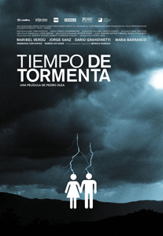

Tiempo de tormenta
La presentadora de la información meteorológica de la televisión anuncia, casi a punto de llorar que después de uno de los inviernos más largos y duros por fin comienza la primavera.
En los servicios de un restaurante de moda dos jóvenes toman unas rayas cuando escuchan que fuera otro muchacho se encuentra con otra persona que le dice que le gustó mucho su maqueta, pero no el nombre del grupo.
El joven de fuera se reúne con los otros dos y celebran el encuentro, proponiendo uno de ellos, Chus, pese a no ser miembro del grupo, cambiar el nombre de "Fuerte marejada" por el de Stormix.
Cuando sale del baño, Chus se reúne con Elena, su mujer, la chica del tiempo, que le reprocha su afición a las drogas, vicio que promete abandonar en cuanto nazca su hijo, aunque ella no le cree.
Cuando su hijo crece, ella se reincorpora al trabajo ante los celos de su marido que cree que ella mira demasiado al locutor del telediario.
Él entretanto permanece en casa cuidando al niño mientras diseña portadas para los discos de los Stormix, que han triunfado, pero cuya compañía discográfica no aceptó las dos últimas.
La noche de Reyes acuden juntos con su hijo a la cabalgata, aunque la cosa no acaba bien, pues cuando dos muchachos la piropean a ella, Chus se lía a golpes con ellos.
Algún tiempo después se separan y mientras ella triunfa en la televisión, el malvive hasta acabar entrando en coma debido a una sobredosis, y acabando en el hospital.
Mientras está ingresado llega Elena, que se encuentra allí con Begoña, la madre de Chus, que no disimula su desprecio hacia ella, diciéndole que solo la llamó porque Chus se lo pidió y diciéndole "ojalá fueses tú la que estuviese ahí dentro".
En el restaurante de moda Óscar, productor musical, llega tarde a la cita con Sara, su mujer, encontrándose en el baño del mismo a uno de los músicos del grupo "Fuerte Marejada" al que le dice que le gustó su maqueta, pero no el nombre del grupo.
Discute tras ello con Sara, pues no desea irse a vivir a un chalet.
En el restaurante tropiezan con Chus y Elena, y al ver la tripa de ella a Sara se le ocurre que quizá un niño pueda resolver sus problemas de pareja.
Años más tarde, durante la Navidad, los Stormix están a punto de triunfar, aunque para ello se ven obligados a salir vestidos con atuendos navideños en la tele como si fueran Papá Noel.
El lanzamiento del nuevo disco está cercano, y aunque Josito se niega a salir así, finalmente lo acepta, aunque le pide al productor que a cambio cojan la portada de su amigo para el disco, a lo que el productor se niega, pese a lo cual acaba aceptando.
Sara sigue bebiendo demasiado y a la salida de un bar tropieza con Chus al que le da un golpe con el paraguas provocando su enfado.
Sara ha quedado con Óscar para comprar los juguetes de los Reyes y ella le dice que no aguanta más, aunque tampoco quiere romper con él.
Cuando regresan a su casa el niño se traga la pieza de uno de sus juegos y se ahoga.
Stormix graba su primer videoclip y mientras lo hacen Óscar recibe una llamada de la empleada de hogar de su casa debido a que Sara está bañándose pese al frío y la lluvia en la piscina.
Ella le dice que no aguanta más, pues él ya ni la desea ni la toca.
Los Stormix consiguen triunfar. Han vendido medio millón de discos y son recibidos por el Príncipe, recibiendo Óscar mientras van camino de la recepción una llamada en la que le dicen que Sara ha sido ingresada debido a un coma etílico.
Cuando llega al hospital ve a la madre de Chus, Begoña, discutiendo con un médico.
En la sala de espera, y mientras espera noticias de su mujer, se sienta a su lado Elena, llorando y entablan conversación, al asegurar él que tiene la impresión de conocerla.
Pese a lo delicado de su estado Chus acaba recuperándose y comienza a ir a sesiones de terapia para toxicómanos junto a Sara, aunque desea dejarlo todo y poder marcharse.
Antes de salir va a verlo Elena y consigue convencerlo para que continúe allí.
En las reuniones ante la psicóloga Sara habla del dolor por la pérdida de su hijo, afirmando que Óscar está con ella porque le da pena dejarla, aunque a ella no le importa con tal de que continúe a su lado.
Tras la sesión Chus la invita a un café.
Cercanas las altas tanto de Chus como de Sara, Elena le dice que deben dejar de verse, mientras Óscar desea continuar adelante, pues, afirma que puede dejar a Sara, ante lo que Elena le dice que no puede dejar a Chus en ese estado.
Finalmente Sara consigue que le den el alta tras mejorar, contándole a Óscar que desea montar una agencia y escuela de modelos con Laura, contratando a Chus para pintar la fachada y el interior de la agencia.
Al verlo tan cambiado Elena se muestra feliz por su cambio, mientras debe rechazar los intentos de conquista de José Luis, el presentador del telediario.
Entretanto los Stormix están al borde de la ruptura, pues Marcos afirma que desea continuar su carrera en solitario, aunque Josito descubre enseguida que lo que realmente pretenden es librarse de él, que, deseando vengarse de Óscar, al que considera culpable de la ruptura le cuenta a Chus que su mujer lo está engañando con él, informándole además del piso en el que se ven.
Tras enterarse de la traición de su mujer llama a Sara y queda con ella, encontrándolo borracho, y emborrachándose ella también cuando le cuenta todo.
Cuando salen del bar se encuentran con una terrible tormenta que hace que vuelen las cosas por la calle provocando graves destrozos.
Entretanto Óscar, tras hacer el amor con Elena le dice que va a dejar a Sara, pues no la quiere ni desea tener otro hijo con ella.
Cuando se están despidiendo descubren que Chus ha entrado en el piso y que está borracho.
Óscar decide decirle entonces que él y Elena se quieren, aunque ella no se atreve a dejarlo, ante lo que Chus se siente dolido, pues se curó por ella y ahora descubre que no significa nada para ella.
De vuelta a su casa Sara le pide que recoja sus cosas y se marche.
Chus por su parte le envía un correo electrónico a Elena en el que le dice que tras descubrir que por fin es feliz, le dice que lo aproveche, pues se lo merece.
Le pide además que le diga a su hijo que se ha ido a un lugar bonito y que quiere volar y hacer por primera vez algo útil por ella y por su hijo.
Tras ello sube a lo alto del Edificio España desde el que se lanza al vacío.
Tras leer el correo de él, Elena sale a dar las noticias del tiempo informando entre lágrimas que el temporal remitió y que, después de uno de los inviernos más largos y duros que se recuerdan, por fin comienza la primavera.